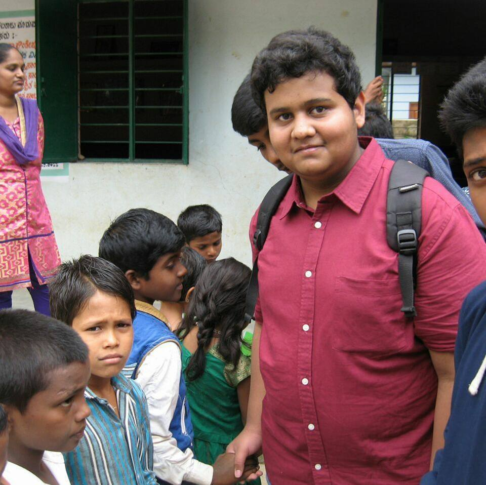

About Me
Anirudh
 As a young boy, I would often look at cars and wonder how do they convert a liquid fuel into something that can take people thousands of kilometers. As i grew up I started coming up with more and more questions, When I was in the 8th grade I decided to look for these answers by studying at the premier institutes in India – the IIT’s and started with putting in extra hours to get selected into them. While in high school I started finding Physics very interesting because it gave me some answers to the question i came up.
After clearing 10th, I took Maths, Physics,Chemistry and Computer science as my subjects for my 11th and 12th grade, this is when I started working more with computers and software. Just like any teenager in the 21st century does, I was watching youtube. When I came across a video from a Guy called linus(linustechtips) was showing "How to build a computer". This made my curious mind to build myself a computer, to be honest I had no confidence that it would work but obviously I typing this from the very same computer.
Enough of the hardware let's talk about software. The very first programming language is C++ which in my opinion is not a very begginer friendly language. Later, during the government imposed a lockdowns I learnt many more such languages. Making the total languages I know to 21.I think this makes me sort of a experienced programmer because everyone knows the logic if(language_known>=10){experience_level="experienced";}. I have included some of my projects in the projects tab you can play with them.
Finally, I am curently studying in 12th grade and have written JEE Mains in january and i am going to write it again in september. I hope you have like and enjoyed the website until the very last semicolon.